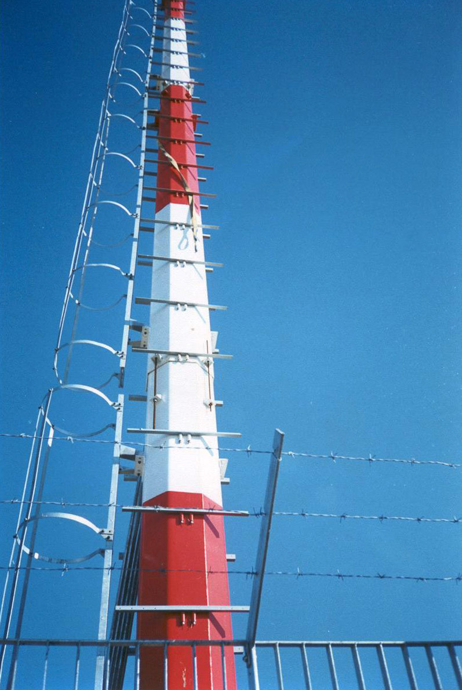
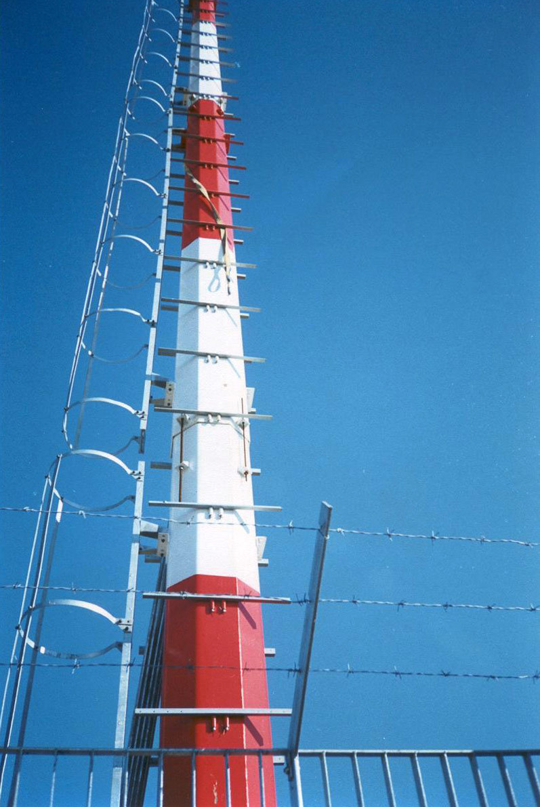
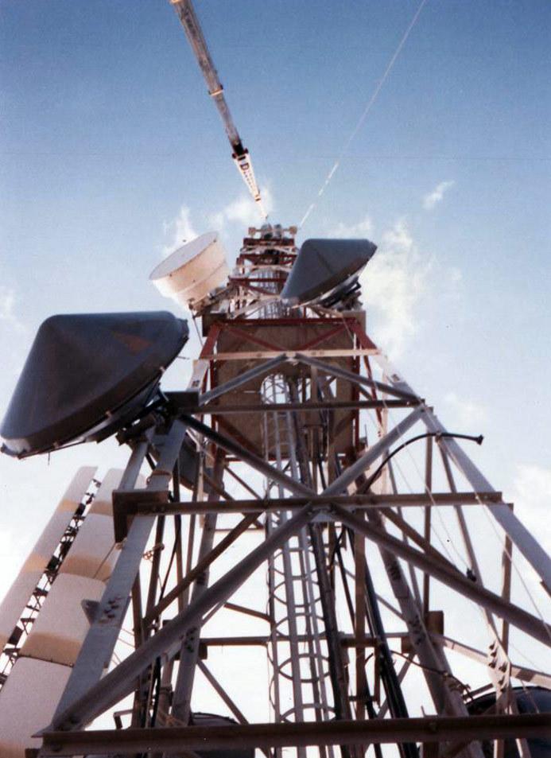
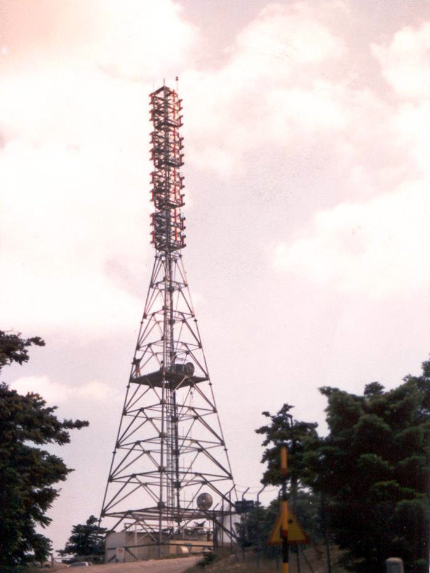

Μεταλλικοί πυλώνες
Η Σύμμικτον Α.Ε. αναλαμβάνει την κατασκευή και εγκατάσταση μεταλλικών πυλώνων για δίκτυα τηλεπικοινωνιών, τηλεόρασης, και ραδιοφωνίας.
Η εταιρεία μας ήταν μια από τις 3 κατασκευαστικές εταιρείες που ανέλαβαν την ανάπτυξη του δικτύου κινητής τηλεφωνίας της Cosmote στην Ελλάδα. Στο πλαίσιο της εξάπλωσης της κινητής τηλεφωνίας στα Βαλκάνια, η εταιρεία μας επίσης ανέλαβε την κατασκευή του 50% του δικτύου της Albanian Mobile Communications (AMC) στην Αλβανία, το δίκτυο της Cosmo Bulgaria Mobile (Globul) στη Βουλγαρία, και το δίκτυο της Cosmote Romanian Mobile Telecommunications (Cosmorom) στη Ρουμανία.
Στο χώρο της τηλεόρασης, αναλάβαμε την κατασκευή του δικτύου του Mega Channel, του πρώτου ιδιωτικού τηλεοπτικού δικτύου στην Ελλάδα. Για αυτό το έργο, η εταιρεία μας πέτυχε κάλυψη του 98% της Ελληνικής Επικράτειας σε λιγότερο από 2.5 χρόνια. Η Σύμμικτον Α.Ε. ήταν επίσης υπεύθυνη για τη συντήρηση του εξοπλίσμού και των υποδομών του δικτύου για 4 χρόνια.
Στο χώρο της ραδιοφωνίας, αναλάβαμε την κατασκευή ραδιοφωνικών υποδομών συμπεριλαμβανομένων στούντιο και κέντρων εκπομπής.
Πεδίο εργασιών
Το πεδίο εργασιών που αναλαμβάνουμε στον τομέα των μεταλλικών πυλώνων συνοψίζεται ως εξής:
Έρευνα & αγορά οικοπέδου
- Ανάλυση της τοποθεσίας που επιλέχτηκε από την ομάδα του εργοδότη
- Εντοπισμός ιδιοκτητών οικοπέδου
- Υπογραφή ιδιωτικών συμφωνητικών αγοράς οικοπέδου
- Ανάπτυξη κατασκευαστικών σχεδίων
- Κατάθεση σχεδίων στις τοπικές αρχές με στόχο την έκδοση κατασκευαστικής άδειας
 Μεταλλικός πυλώνας κατασκευασμένος από τη Σύμμικτον Α.Ε.
Μεταλλικός πυλώνας κατασκευασμένος από τη Σύμμικτον Α.Ε.
Κατασκευή & ηλεκτρομηχανολογικές εργασίες
- Ολοκλήρωση έργων οδοποιίας (ευθυγράμμιση, πλαισίωση, χωματουργικές εργασίες)
- Ολοκλήρωση έργων σκυροδέματος, θεμελίωσης και εγκατάσταση γείωσης
- Κατασκευή και ανέγερση μεταλλικού πυλώνα με χρήση γερανού
- Εγκατάσταση γεννήτριας
- Εγκατάσταση φωτισμού και διασύνδεση πίνακα ελέγχου
- Εγκατάσταση και γείωση αλεξικέραυνου
 Ανέγερση μεταλλικού πυλώνα με χρήση γερανού
Ανέγερση μεταλλικού πυλώνα με χρήση γερανού
Τηλεπικοινωνιακές εργασίες
- Ανάλυση ετοιμότητας σταθμού με ψηφιακή χαρτογράφηση
- Παραγγελία και αποστολή τηλεπικοινωνιακού εξοπλισμού
- Εγκατάσταση και ενεργοποίηση τηλεπικοινωνιακού εξοπλισμού
- Ενσωμάτωση σταθμού στο ευρύτερο δίκτυο (μέσω coupling ή ενοικιασμένων γραμμών)
Έργα
Δίκτυα τηλεπικοινωνιών
| Project | Περιγραφή | Τοποθεσία |
|---|---|---|
| Cosmote | Πυλώνες κινητής τηλεφωνίας | Ελλάδα |
| EMY | Πυλώνας μετεωρολογικού σταθμού | Ελλάδα |
| Mercury | Αυτο-υποστηριζόμενοι μεταλλικοί πυλώνες ραδιοφωνικού σταθμού | Ελλάδα |
| AMC | Πυλώνες κινητής τηλεφωνίας | Αλβανία |
| Globul | Πυλώνες κινητής τηλεφωνίας | Βουλγαρία |
| Cosmorom | Πυλώνες κινητής τηλεφωνίας | Ρουμανία |

 


Δίκτυα τηλεόρασης
| Έργο | Περιγραφή | Τοποθεσία |
|---|---|---|
| Mega Channel | Τηλεοπτικά στούντιο και γραφεία | Αθήνα, Μαρούσι, Παιανία, Θεσσαλονίκη |
| Mega Channel | Links | Αθήνα, Θεσσαλονίκη |
| Mega Channel | Δορυφορικός σταθμός λήψης | Παιανία |
| Mega Channel | Κέντρα εκπομπής | 12 τοποθεσίες στην Ελλάδα |
| Mega Channel | Repeaters | 19 τοποθεσίες στην Ελλάδα |




Δίκτυα ραδιοφωνίας
| Έργο | Περιγραφή | Τοποθεσία |
|---|---|---|
| Diesi FM | Κέντρο εκπομπής | Υμηττός |
| Skai FM | Ραδιοφωνικό στούντιο | Παλλήνη |
| Best FM | Ραδιοφωνικό στούντιο και κέντρο εκπομπής | Ψυχικό, Υμηττός |
| Flash FM | Ραδιοφωνικό στούντιο και κέντρο εκπομπής | Αθήνα, Πάρνηθα |
| Top FM | Ραδιοφωνικό στούντιο και κέντρο εκπομπής | Αθήνα, Πάρνηθα |
| ERA | Στούντιο ηχογράφησης | Αθήνα |
| Pacific | Στούντιο ηχογράφησης | Βριλήσσια |
| Prisma | Στούντιο ηχογράφησης | Γαλάτσι |
| Kitselidis | Στούντιο ηχογράφησης | Παγκράτι |
| Rex Music Hall | Ολοκληρωμένη ακουστική υποδομή | Αθήνα |